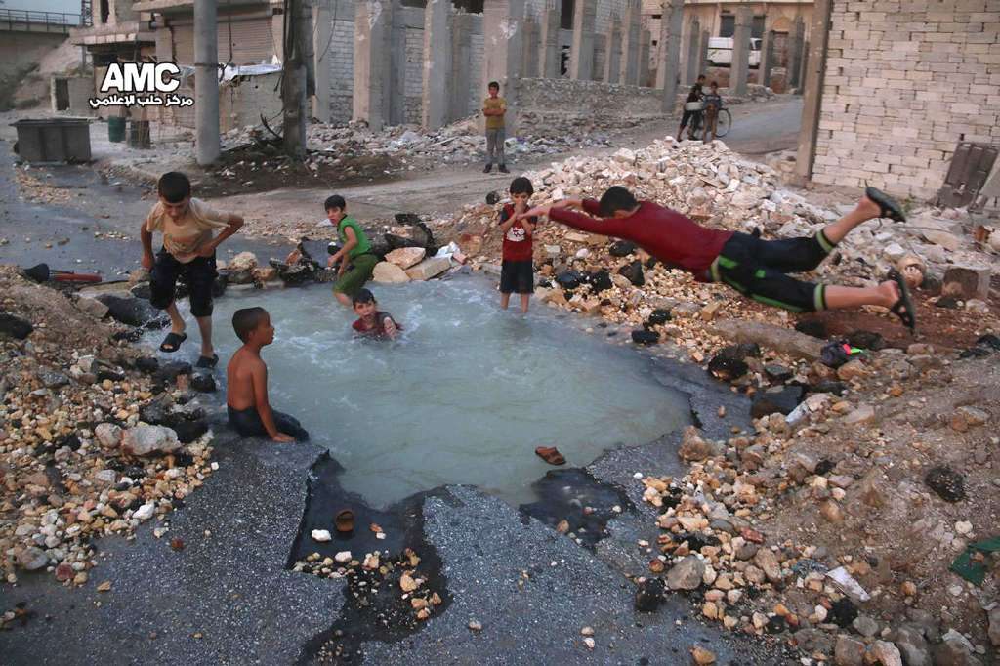
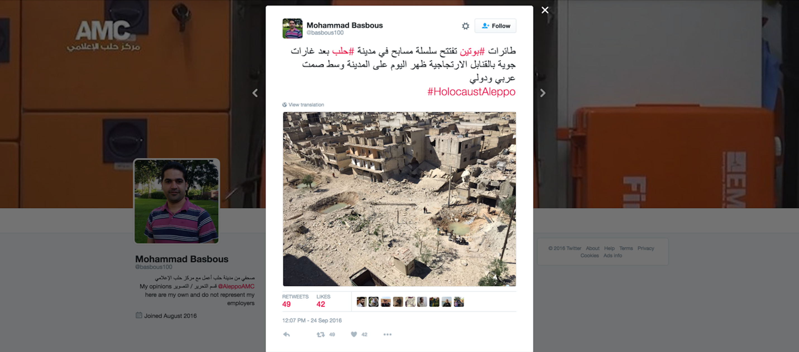
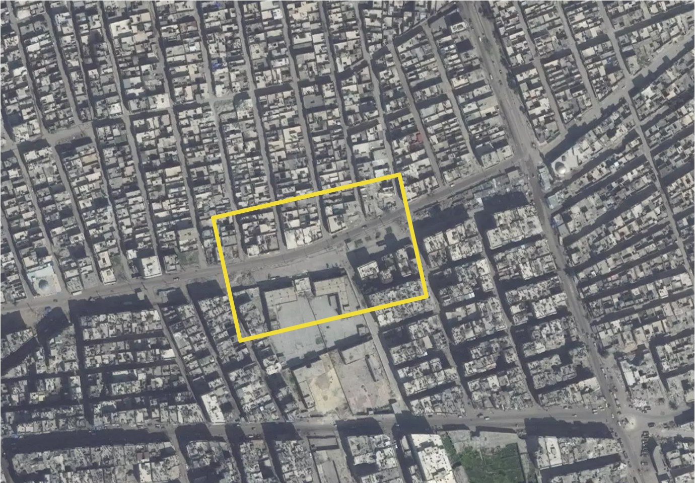
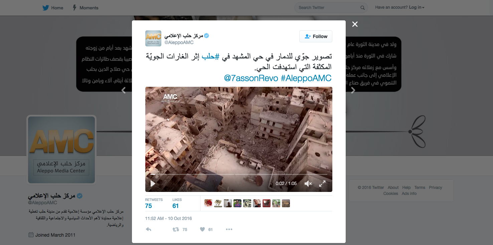

View From Above by Design
View From Above by DesignSince July 2015 an estimated 250,000 people -most of whom are civilians but also including armed opponents of the Assad regime - have been surrounded in East Aleppo by government forces and assaulted by barrel bombs and, since last year, Russian airstrikes. The residents of East Aleppo are currently shut off from access to water, electricity, and humanitarian aid. Between September 2012, when the civil war found its way to Aleppo, and July 2015, the city was divided roughly in half, between the government-controlled west (blue) and the rebel-held east (yellow). Between January 2016, when we first published our interactive map, and June, the front-lines separating these two halves remained quite stable, despite the barrel bombs and airstrikes.
Lines of control in Aleppo, sourced from New York Times and Liveuamap Syria. Click layer menu in the upper right to view the lines in December 2015, April 2016, and September 2016.
July 2016 marked a turning point, and since then those lines have been in rapid flux. The changes in boundaries are lines of violence imposed on the city and its inhabitants. Part of East Aleppo is now an island of rebel-held territory which the Assad regime is trying to conquer or obliterate. This line between yellow and blue marks the brutal battles destroying and dividing neighborhoods that have been home to diverse cultures and religions for centuries. The stakes -- militarily, politically, and symbolically -- are high: Aleppo has always been the largest city in Syria, and even over these last two months, after hundreds of thousands have fled or been killed or injured, it still constitutes the largest stronghold of rebel-held territory in all of Syria. And in Aleppo, the targets are the city and its civilians: the Violations Documentation Center, widely considered the most reliable monitor of casualties in the war, has documented mostly civilian, not military, casualties.
1
On August 14, 2016, in an opinion piece in the New York Times, Line Sergie Attar told the story of her last visit to Aleppo in June 2011, just as the uprising against Assad's regime was spreading across the country but before it had turned into war. She visited and photographed her grandmother’s apartment, which sits very close to what became that front line between the two Aleppos. Five years later, she writes from far away about the siege of the eastern side, and about a striking moment in which the opposition tried and managed to momentarily break the siege by burning tires in order to the Russian jets providing air support for the Army's attacks. She talks about what she read on social media – some said that ‘this battle would (again) tip the scales of the war. Others claimed that the rebels’ victory meant the bloody end was (again) near.”
2
Syria's war is something she reads about and watches on YouTube and Twitter. And she studies the maps, with a great deal of ambivalence. She tells of zooming in and out of the red/green divide, animated by the intimate knowledge and memory of her city. She doesn't like the maps with their "red and green blobs showing a shifting frontline…a favorite tool of the dispassionate Syria analyst.” But she follows them nonetheless: “These wretched maps rudely superimpose their lines over the landmarks of my life: on the east are the people I grew to love through the revolution, men, women and children who defied all odds and stood chanting in the face of one of the most ruthless regimes in history. On the west are my streets, my school, my university, my home. I study these maps and calculate how far my home sits from the moving front line. As my neighborhood shifts sides from west to east, from red to green, will it be the next target of Mr. Assad’s barrel bombs? Or will it be left to the mercy of the rebels, who promised not to loot or destroy private property or kill civilians?”Her intimacy with the map is something very few of us here have. Her concern about its distance from her city needs to be taken seriously – a dispassionate analysis of the story those maps tell seems irresponsible at the very least. And yet she watches, studies, attaches herself to the map, and seems to trust – as much as she loathes – the image it offers.
We have made one of those maps, and can account for what the maps are able, or just as importantly, not able, to do, show, and say. It's risky to draw maps of a war zone in the middle of a war. Things change quickly, and it's not always, or even often, clear what or why things are happening at any moment. Our map is designed to facilitate the documentation of the timelines and timescales of the war, in order better to understand and respond to it.

Children swimming in a rain filled crater in the Sheikh Saeed neighborhood, published by Aleppo Media Center
Here is a photograph from Aleppo published on the BBC news website on September 1, 2016. The BBC sourced it to the Aleppo Media Center, a group of anti-government activists who have been prominent in distributing imagery from Aleppo on social media channels, posting photos on Facebook as well as videos on YouTube, throughout the war. They are one of a small number of networks of trusted on-the-ground sources for international news outlets, which for the most part are denied entry into Syria or have deemed it too dangerous to go during the civil war. You are familiar with their images even if you don't know their name: the picture of dazed five-year-old Omran Daqneesh sitting in an ambulance after surviving yet another airstrike came from the AMC as well. The photograph above, from the neighborhood of Sheikh Saeed in the Southeastern part of the city, was taken, just as (quoting the BBC) “the UN called for a 48-hour 'humanitarian pause' to allow the safe delivery of food and medicine to the rebel-held east and government-controlled west.” The BBC headline read: "Syrian boys swim in crater as battle for Aleppo rages." The AMC caption is a little different, and makes a stronger claim: "Whatever Assad has done in Aleppo, life is not over, its children make a new life in every site destroyed by his rockets."
3
On September 27, Reuters obtained and circulated this video, taken by a drone flying over the eastern side of the city. Other rain-filled bomb craters are now eerily empty here, and likely in many other parts of East Aleppo, and new ones join them every day.
When the drone footage of Aleppo appeared, it did not come with much context: "Drone footage obtained by Reuters shows extensive damage in eastern Aleppo," was the headline. To find out what neighborhood was being photographed, and how or why Reuters managed to fly a drone over it, we searched Twitter and You Tube and looked for things which might tell us about or even show the same site from the ground.

Indeed, we found this image, under the hashtag #holocaust Aleppo - which has been prevalent since the siege in July - posted by Aleppo Media Center on September 24, a day before the drone footage was released. We messaged him and asked which neighborhood this photo was from. The reply: "from Tariq al-Bab," or al-Helwaniyeh, a neighborhood in East Aleppo. Our map can show you the neighborhood where that drone was flying at a different moment in time.

The al-Helwaniyeh neighborhood on March 23, 2016 highlighting site of the water filled craters visible in the drone video released by Reuters on September 27th. Satellite image © 2016 DigitalGlobe, Inc.
As the siege has continued, the violence has intensified, and meetings at the UN don’t seem to manage even to agree on whether or how to get aid into the besieged part of Aleppo. Comparisons are now drawn between sieges – Aleppo and Sarajevo, for example - and between cities destroyed in war. In the New York Times, Michael Kimmelman juxtaposes Berlin 1945, Grozny 2000, and Aleppo 2016, and comments on the drone footage released by AMC on October 10th 2016.
Drone video of al-Ansari Mashhad neighborhood in Aleppo, released by AMC on October 10, 2016, re-published by the New York Times on October 14, 2016.
In it, we see another destroyed neighborhood: al-Ansari Mashhad in East Aleppo. Kimmelman writes: "The destruction is so complete that it obliterates even a sense of time."
4
For Aleppo and its diverse timescales, this is true on many levels, historical and cultural, five thousand years old or fifty years old. “A neighborhood is more than an assortment of buildings and streets. It is life, shared and rooted in place, passed down through generations.” And he takes the risk of generalizing across the series of comparable images: “At a glance, the video shot from a drone could show Berlin in 1945 or Grozny, 2000. Mass death erases all distinctions.”But the formal correspondence between the images leads him to miss the most extraordinary dimension of the most recent one. For him, it seems, the aerial image communicates distance, separation, the loss of the lived reality of the street: "Figures move through the pulverized rubble but are hard to make out" Kimmelman continues: “Would you really feel any pity if one of those dots stopped moving forever?” Harry Lime asked on the Ferris wheel in “The Third Man,” the classic noir film set in postwar Vienna. This is drone footage, after all, shot from the same detached, superior perspective of the bombers who committed this atrocity in the name of fighting non-jihadist rebels. The video was made to document the devastation and bear witness, but it inevitably reduces people on the streets to Lime’s dots.”
But this is not the view of a detached drone. Not all drone views are alike, nor do they all come from the detached superior perspective of the bombardier. As the caption at the very end of the article informs us, “The video was taken by The Aleppo Media Center (AMC), a group of antigovernment activists and citizen journalists who work to document the conflict through video, photography and social media.” In fact, the photographer that took the video is named Hasan Kattan of AMC, and he's one of the talented, committed, and decidedly un-detached AMC activists who make it possible to see what's happening in Aleppo - in order to help stop it.

First tweet of this drone footage by AMC: "Aerial photography of the damage in #Aleppo following intensified air raids targetting the neighborhood."
That is as important to the story as the destruction of the of the al-Ansari Mashhad neighborhood. So who is "detached"? The so-called international community -- which fuels the war, sustains Assad and ISIS and sacrifices those in between, and cannot even manage to get humanitarian aid to besieged Aleppo. Mojahd Aboalijood is involved, not detached. It is up to us to look for the dots, to do the hard work of making them out and imagining their lives -- we owe that to Aboalijood and his images.
The views emanating from Aleppo during this siege and over the five years of the war are complex. From the ground, from the air, onto Twitter and YouTube in the hope of reaching an international audience: the video, like the map, is there for us to see. Let’s read it carefully, ask about what it shows, and act to change that catastrophic reality.
Why Do Activists Fly Drones? Nadine Fattaleh talks to their producers via Facebook.
In the few months that we spent watching drone video emerge from Aleppo Media Center5
we, in the Center for Spatial Research, found ourselves wondering, why do activists fly drones in a war zone? With each new drone video showing yet another destroyed neighborhood we speculated about the origins and intentions of the drone footage. On the one hand, the disembodied overhead view offered a straightforward, objective view that didn’t obviously raise doubts or questions about its origins or the perspective of its producer. On the other, the Aleppo Media Center had been under scrutiny a number of times for the subjective relationship between its photographers and the war’s victims they were depicting. AMC photographer Mahmoud Raslan6
, who took the widely circulated photo of "ambulance boy"7
Omran Daqneesh, was attacked by Assad supporters as a terrorist, and the photo was said to be staged by those who wanted to produce images that moved the West to take action in Syria. More sympathetic commentators online compared the photograph of Omran to that of Aylan Kurdi8
, while others discussed how Omran represented the many, many children who were victims of aerial bombardment in Aleppo. The New York Times crowd-sourced an entire article about “What Caught Commenters’ Eyes About a Small Syrian Boy in a Big Chair” exploring the ethic of Raslan’s image. The comments were searching: Is he objectifying the child? What if he had wiped the blood off of his face? What if he had comforted him instead of bombarding him with the camera?9
But few of them seemed to acknowledge their own complicity in the objectification of the child, their responsibility in demanding that someone bear witness through photography so that they could know.The harrowing thing about the photograph of Omran is its intimacy and closeness, both spatially and temporally. It is taken a few moments after the attack, and the child sits within arm's reach of the photographer and his camera. But how different, in fact, is the drone footage produced by Aleppo Media Center from their up close photography of the human victims of the war? The distance that is offered through the spatial detachment of the drone, but also through the temporal distance from actual attack, gives the time and space for contemplation and reflection. This distance puts into perspective the scale of the war and the destruction that it has caused, to humans and their environment, which cannot be thought of separately.
Interestingly, the news coverage of Aleppo Media Center's drone video was different from the coverage of Omran's photograph
10
. Western news outlets reproduced the video asserting that it showed the scale of physical damage without questioning its source, nor taking steps to verify the location of the footage. It could have been footage of another city, after all, although it wasn’t; we’ve confirmed it and located all of the drone videos on a satellite image. Michael Kimmelman of the New York Times was probably the first to raise ethical questions about the footage: wasn't the video giving us the disembodied, detached, and distanced view of the perpetrator, he asked11
. These worried, though, simply reverse some of the concerns about the image of Omran: one is ‘too subjective,’ the other ‘too objective.’Both of these objections miss the point. Our research has shown us that Western media has been republishing images by "citizen journalists" from Aleppo without actively engaging with their intentions. Aleppo Media Center must be thought of as a network of trained, organized and dedicated activists who are constructing an archive of evidence and testimony, as well as broadcasting to the world images of Syria. They are not the casual passers-by who happen to randomly witness and document events. The drone footage is part and parcel of a much larger project, and belongs side by side with AMC’s more intimate and close-up views of the human costs of the fighting.
The AMC drone footage must also be understood to be in conversation with other representational practices in Syria. In July 2016, the Center for the Study of the Drone published in a compilation of Syrian drone videos from the Russian media, the Syrian Army, jihadist rebel groups, US and UK attacks on ISIS targets, and NGOs or press outlets
12
. The article doesn’t include examples of drone videos by media-activist groups such as AMC, because their first drone footage was taken, as far as we know, in October 2016. An examination of the spectrum of drone videos suggests that there are many different ways to produce videos with an overhead view. Not only are there differences on a visual level in terms of editing and effects, but the soundtracks and the framing (title, caption, description on the footage through the YouTube release), have a significant effect on the way that videos are viewed.The drone videos by the Russian media and the Syrian army specifically document the aerial view of cities that are newly liberated from rebel control. They show an overhead view of Syrian military personnel and tanks making incursions to reclaim territory for government control. Videos by both Russian and Syrian Government channels on YouTube showed an overhead view of Aleppo in December 2016, to celebrate the recapturing of the city by government forces. As such, the AMC drone footage must be understood as part of the contest over representing the aerial view of the city. AMC’s drone videos constitute a remarkable and unprecedented act of reversing the perpetrator’s gaze and reclaiming the perspective of the criminals in order to showcase the destruction that they have wrought. AMC’s drone videos, with their details of rubble, framed through the title “destruction brought about by bombardment from the Syrian regime”, superimposed over melancholic and slow music, are subversive and effective. They testify not only to the destruction of the city, but also the ability of a small but organized group of activist-journalists to speak back through a visual language that has traditionally been reserved for the military perspective of the powerful.
I spent three months, from October to December, speculating about the photographer behind AMC’s drone footage. On December 22nd, when Aleppo fell to the hands of the regime, AMC posted a video of their last moments inside the city.
13
Members of the team left Aleppo and headed west towards Idlib, where they became internal refugees. After the sense of devastation died down, I contacted Hasan Kattan, the AMC member who had nominally been mentioned as the drone photographer, on Facebook. I asked him a few questions, and he responded through voice recordings so that he could express himself fully. (We were unable to Skype because the internet connection is weak.) Below, I reproduce our conversation that I’ve translated from Arabic into English.Hasan Kattan is a founding member of Aleppo Media Center which was established in 2012. He started working in the news editing division of the center, and then moved to working on TV reports, and in the past year he has served as the executive director of AMC.
What is the difference between normal photography and drone photography?
I photographed victims and sites of barrel bomb attacks before with a regular handheld camera, and I photographed using a drone, and they are very different experiences. It is difficult to be in the place of the event or attack where people are crying and to have a camera and to photograph their suffering, especially because of the physical closeness of the person you are photographing. Drone photography allowed me to be at a distant, observing in a total way from the sky. There are difficulties and dangers, of course, associated with drone photography. The first difficulty is the wires that are dangling from the air and the electricity lines. The second is a security danger when factions are around, or militants may think that I'm flying a surveillance drone for the regime. Of course, every time I fly the drone I have some prior fears.
Drone photography gives a special distance, or a special view of the thing that is happening. It shows you exposed spaces and things that are impossible for you to see from the ground. The scale of destruction, or the life in Aleppo from above appears in a very different way. You can see the scene in its entirety and you can get to know many details either about the homes, or buildings destroyed with a room that is left intact, a children’s bedroom perhaps, or a kitchen. When the drone goes higher, you can see more vast destroyed spaces, and you can maybe catch a glimpse of life in this great expanse of rubble.
How long have you had the drone, and where did you get it from?
During the first siege of Aleppo, around six months ago, I realized the importance of taking drone videos of the vast destruction of entire neighborhoods in the city of Aleppo. I bought a drone that costs about USD1,800. It was costly, but I raised the money and bought it. I learned how to use it through watching YouTube videos, and I started trying it out. The first time I tried to fly the drone it hit a barrier and one of its wings broke. Flying and navigating the drone is difficult. It’s basically a device that you use with your phone, and it works with a program called DGI go. When I fly the drone, I connect it to my phone that has a screen that is relaying what I am seeing in real time, and I press record to capture segments.
I held onto the drone and was using it to film until very recently. A few days before we left Aleppo the drone got tangled up in some electricity wires and it fell and broke. The drone is now with me in Idlib but it is broken, and I am trying to fix it and to start working with it again.
How do you choose the locations of where to shoot?
At first, I used to find places to just train on flying the drone, and after a while, I started actually filming in different neighborhoods and sharing the footage on Aleppo Media Center’s different channels.
When I choose the location, I look for a place that are far away from the military fronts, or away from checkpoints or militant factions, because this creates a danger. The danger is that people in Eastern Aleppo would think that the drone is for the regime. I used to talk to the militant factions that are in a certain place to tell them that the drone that is going to fly is ours, not the enemy’s drone, and despite that, every time I flew the drone it got shot by civilians who were scared. I used to fly it on a low elevation, and I think that scared people even more. I was also always concerned that the drone would break because I don’t have another one and there are no spare parts and the roads are all closed. I wanted to fly the drone and capture the important footage but also to make sure I kept it safe.
Some critics have suggested that the drone perspective is the perspective of the perpetrator. It is detached and far removed. What are your thoughts on this?
I think this is basically correct; you can say that drone photography is the perspective of the perpetrator or criminal from the sky. But I think that the aerial shots that we are taking are different. When the air force is carrying out an attack in places, they doesn’t see what comes after the crime. They see the instant of the crime or second of the attack, and then we come in and photograph a place from above after it is hit by a few barrel bombs. This way, you can see what the effect is; we are photographing the aftermath of bombardment.
Hassan tried but failed to enter into Turkey through Syria's Northern borders in early 2017. He is an assistant director on Last Men of Aleppo (2017), a documentary film that won the Jury Prize in the World Cinema Documentary Competition at the 2017 Sundance Film Festival.
Archive of Drone Videos from the Aleppo Media Center
December 15, 2016 شاهد تصوير جوي لإخلاء سكان حلب المحاصرة من منازلهم باتجاه ريف حلب الغربي
Look at the aerial view of Aleppo citizens evacuating their houses in the beseiged areas and heading towards the Western outskirts of the city.
December 9, 2016 شاهد تصوير جوي لحي الشعار شرقي حلب حين أخفى القصف الجوي معالمه قبل سيطرة نظام الأسد عليه
Look at aerial bombardment of the al-Ashaar neighborhood of eastern Aleppo when the regime's bombardment destroyed its features before the government took over control.
November 25, 2016 تصوير جوي لآثار القصف بصاروخ بالستي من البارجات الروسية استهدف حي المشهد في حلب
Aerial view of the impact of ballistic missile bombardment from Russian barges on al-Mashhad neighborhood in Aleppo.
November 13, 2016 تصوير جوي للدمار الذي خلفه قصف طائرات النظام وروسيا على حي الشعار شرقي حلب
Aerial view of the destruction left behind by government planes in al-Shaar neighborhood in Eastern Aleppo.
November 4, 2016 تصوير جوي للدمار الحاصل في حي طريق الباب شرقي حلب إثر قصف طائرات النظام وروسيا
Aerial view of the destruction in Tariq al-Bab neighborhood in Eastern Aleppo as a result of Syrian government planes.
October 21, 2016 تصوير جوي للدمار الذي خلفه قصف طائرات النظام وروسيا على حي السكري في حلب
Aerial photography of the destruction left behind by the bombardment of Syrian regime on al-Sukkari district in Aleppo.
October 10, 2016 تصوير جوّي للدمار في حي المشهد إثر الغارات الجويّة المكثفة التي استهدفت الحي
Aerial view of the destruction in al-Mashad neighborhood following intensive air raids that targeted the neighborhood
Case Study Team:
Laura Kurgan, Nadine Fattaleh
Return to Case Studies